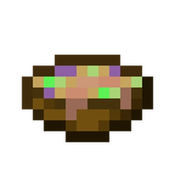

Odin's Eye Stew Recipe

Ingredients
- Thirst for Knowledge
- Well of Wisdom
- Eye (must be yours)
- Sharp Knife
Steps
- Visit your local well of wisdom
- Take your knife and pluck out your favorite eye
- Let the eye soak in the well for 2 hours, seek medical attention
- Post surgery, Serve and Enjoy!
The Story Behind The Meal